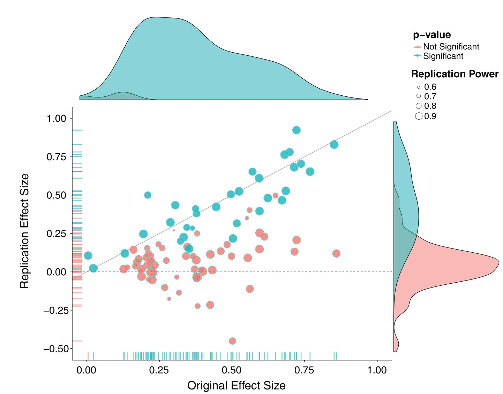
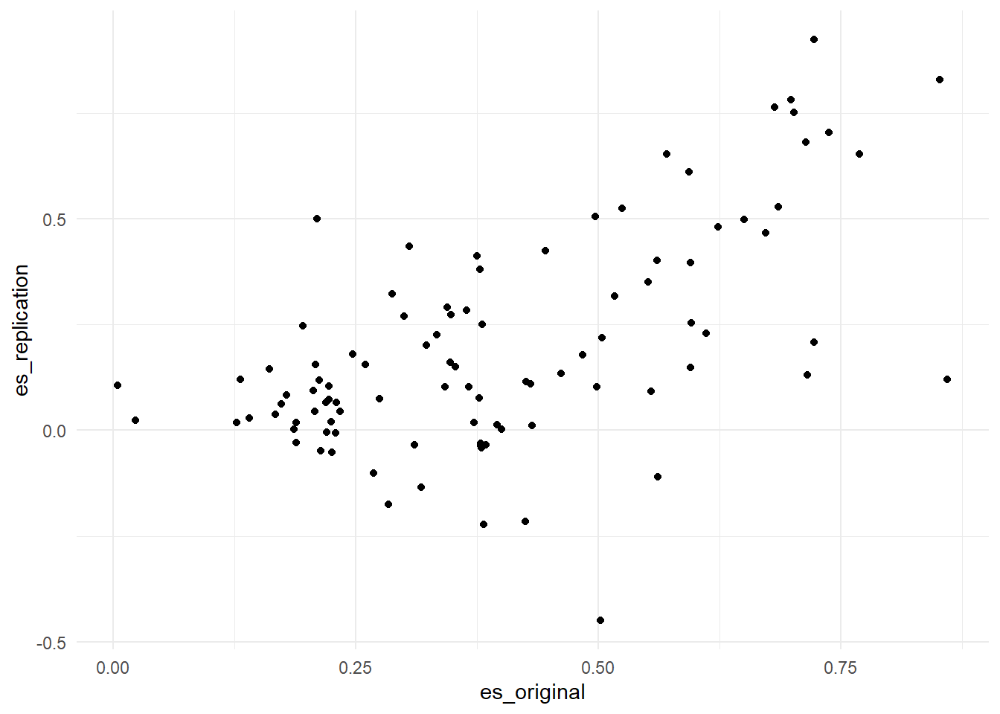
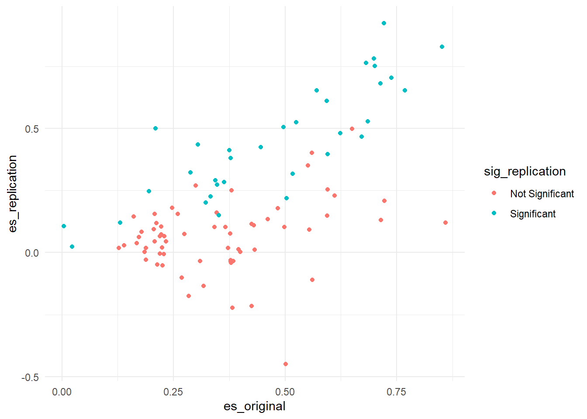
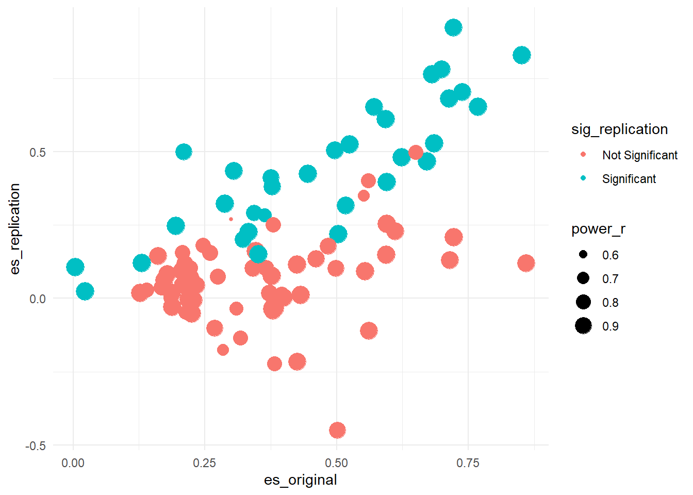
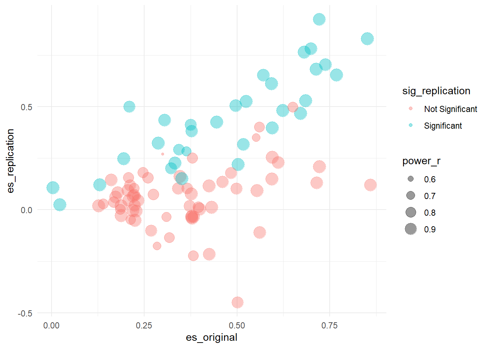

Eines der Anwendungsgebiete von R ist die Visualisierung statistischer Daten. Durch die Fülle der vorhandenen Pakete, können eine Vielzahl von Abbildungen erstellt werden, die andere Statistikprogramme im wahrsten Sinne des Wortes alt aussehen lassen. Der de facto Standard zur Erstellung wissenschaftlicher Abbildung ist das Paket ggplot2, das mit dem Tidyverse installiert und standardmäßig geladen wird.
Eine tolle Abbildung, an der viel lernen können, stammt von der Open Science Collaboration (2015, S. 6) und wurde im Magazin Science veröffentlicht. Die Gruppe hatte sich zum Ziel gesetzt, hundert psychologische Studien zu replizieren. Sie wählten hoch publizierte Studien aus und versuchten diese unabhängig von der originalen Arbeitsgruppe zu replizieren. Das Ergebnis war sehr ernüchternd, weil ca. 65% der Studien nicht repliziert werden konnten und die durchschnittliche Effektstärke der replizierten Studien nur halb so groß war, wie in den Original-Studien. Die Psychologie wurde spätestens damit in eine fortwährende Replikations-Krise gestürzt.
Einen Teil ihrer Ergebnisse fasste die Gruppe in einer sehr informationsreichen Abbildung zusammen (Abbildung 3 in der Originalarbeit).

Hier können wir auf der \(x\)-Achse die Effektstärke der Original-Arbeit sehen (in \(r\)) und auf der \(y\)-Achse die Effektstärke der Replikations-Studie. Zudem wurde farblich kenntlich gemacht, ob eine Studie in der Replikation signifikant, also ob \(p < 0.05\) war. Dann wurde die Größe der einzelnen Datenpunkte skaliert anhand der Power der Replikationsstudie, wir haben Fransenachsen, die uns die Verteilung der Studien anzeigen und dann sind noch zusätzlich Kerndichteschätzungen der Verteilulng der Effektstärken für die Original- und Replikationsstudien am Rand der Abbildung angegeben.
Auch wenn diese Abbildung sehr kompliziert zu erstellen scheint, und es mit herkömmlichen Programmen unmöglich wäre, eine solche Abbildung in einem Schritt und reproduzierbar zu erstellen, können wir diese Abbildung mit ggplot2 im Handumdrehen auf unseren Bildschirm zaubern. Die Grundlage einer jeden Abbildung sind natürlich Daten. Die Original-Daten der Autoren kann man sich beim Open Science Framework herunterladen und sich am data cleaning versuchen. Eine abgespeckte Version der Daten, die alle nötigen Variablen enthält, findet sich aber auch im costatcompanion als reproducibility_project.
## # A tibble: 168 x 15
## study_title_o journal_o first_author senior_author_o institution_pre~
## <chr> <chr> <chr> <chr> <dbl>
## 1 Tracing atte~ JEPLMC Roelofs Roelofs 2.52
## 2 Now you see ~ JEPLMC Morris Morris 3.27
## 3 Working memo~ JEPLMC Liefooghe Vandierendonck 2.57
## 4 Accelerated ~ JEPLMC Storm Bjork 5.16
## 5 The intermix~ JEPLMC Mitchell Hall 2.52
## 6 A single-sys~ JEPLMC Berry Henson 4.13
## 7 Modeling dis~ JEPLMC Beaman Beaman 2.22
## 8 Stereotypes ~ JEPLMC Dodson Dodson 4.36
## 9 Prime diagno~ JEPLMC Weidemann Shiffrin 4.5
## 10 Across-notat~ JEPLMC Ganor-Stern Tzelgov 1.28
## # ... with 158 more rows, and 10 more variables:
## # institution_prestige_senior_author_o <dbl>, surprising_result_o <dbl>,
## # exciting_result_o <dbl>, pval_original <dbl>, pval_replication <dbl>,
## # es_original <dbl>, es_replication <dbl>, power_r <dbl>, sig_original <fct>,
## # sig_replication <fct>Beginnen wir mit dem Basis-Plot in der Mitte. Da für einige Studien keine Effektstärken berechnet werden konnten, filtern wir uns nur die Fälle raus, bei denen wir eine Effektstärke für beide Messungen haben.
reproducibility_complete <- reproducibility_project %>%
filter(!is.na(es_original) & !is.na(es_replication))
reproducibility_complete## # A tibble: 97 x 15
## study_title_o journal_o first_author senior_author_o institution_pre~
## <chr> <chr> <chr> <chr> <dbl>
## 1 Tracing atte~ JEPLMC Roelofs Roelofs 2.52
## 2 Now you see ~ JEPLMC Morris Morris 3.27
## 3 Working memo~ JEPLMC Liefooghe Vandierendonck 2.57
## 4 Accelerated ~ JEPLMC Storm Bjork 5.16
## 5 The intermix~ JEPLMC Mitchell Hall 2.52
## 6 A single-sys~ JEPLMC Berry Henson 4.13
## 7 Modeling dis~ JEPLMC Beaman Beaman 2.22
## 8 Stereotypes ~ JEPLMC Dodson Dodson 4.36
## 9 Across-notat~ JEPLMC Ganor-Stern Tzelgov 1.28
## 10 Attractor dy~ JEPLMC Mirman Magnuson 3.16
## # ... with 87 more rows, and 10 more variables:
## # institution_prestige_senior_author_o <dbl>, surprising_result_o <dbl>,
## # exciting_result_o <dbl>, pval_original <dbl>, pval_replication <dbl>,
## # es_original <dbl>, es_replication <dbl>, power_r <dbl>, sig_original <fct>,
## # sig_replication <fct>Wie immer fangen wir an, unsere \(x\)- und \(y\)-Achse zu definieren. Dann wollen wir Punkte zeichnen, also können wir gleich ein geom_point() hintererschmeißen. Die Effektstärke der Original-Studie findet sich im Datensatz unter der Variablen es_original, die der Replikation unter es_replication.

Nun wollen wir etwas Farbe ins Spiel bringen, also angeben, ob eine Studie in der Repliktaion signifikant war, oder eben nicht. Die Variable, die uns das angibt, ist sig_replication.
reproducibility_complete %>%
ggplot(aes(x = es_original, y = es_replication, color = sig_replication)) +
geom_point()
Wunderbar, als nächstes wollen wir die Größe der Punkte abhängig von der Power in der Replikations-Studie machen. Die entsprechende Variable heißt power_r.
reproducibility_complete %>%
ggplot(aes(x = es_original, y = es_replication, color = sig_replication, size = power_r)) +
geom_point()## Warning: Removed 3 rows containing missing values (geom_point).
Das ist schon gar nicht schlecht, aber wir haben jetzt das Problem von “overplotting”, also, dass viele Datenpukte übereinander liegen könnten, ohne, dass wir das mitbekommen. Eine gute Lösung ist es, die einzelnen Punkte transparent zu machen. Wir wollen, dass das ausschließlich die Punkte betrifft, weshalb wir diese Transformation auch nur in der Ebene der Punkte angeben können.
reproducibility_complete %>%
ggplot(aes(x = es_original, y = es_replication, color = sig_replication, size = power_r)) +
geom_point(alpha = 0.4)## Warning: Removed 3 rows containing missing values (geom_point).
Open Science Collaboration. (2015). Estimating the reproducibility of psychological science. Science, 349(6251), aac4716. https://doi.org/10.1126/science.aac4716